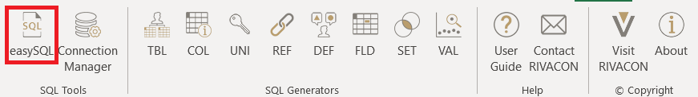
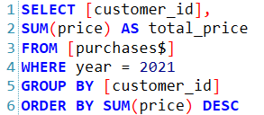
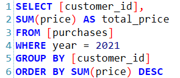
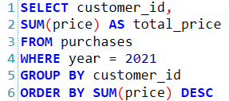
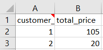

EasySQL
Custom SQL queries
EasySQL allows the user to execute custom SQL queries, that cannot be created with any generator.
It is also possible to execute a =SQL(...) command inside a cell, but the editor provides much more space to type as well as autocompletion and the "Connection Overview".
For custom SQL queries, the EasySQL form is therefore recommended.

Figure 1: location of the EasySQL ribbon
Using EasySQL requires knowledge about SQL queries. Keep in mind, that the syntax must be adjusted based on the type of database. This is demonstrated in the following example.
|  |  |  |
|---|---|---|
| Figure 1: Excel Workbook | Figure 2: DB2zOS, SQLServer | Figure 3: Oracle, PostrgeSQL, DB2 |
When applying queries to data saved in Oracle, PostgreSQL, or IBM DB2, you can use the plain SQL syntax.
However, there are still minor differences between the three database management systems.
For IBM DB2zOS and SQLServer, tables must be referenced between square brackets [].
Additionally to the brackets, excel demands the use of a $ sign after the table name.
Example
Consider the database of a retailer with an entity purchases, that stores the year, price, and the customer's id for every purchase.

Table 1: Purchases
We would like to find out how much each customer paid in 2021. Below is an example of the corresponding query's syntax for every one of our supported database management systems.

Table 2: Executed query
Worksheet function
The execution of custom statements can not only be done from EasySQL but also our SQL worksheet function.
Just like other common Excel worksheet functions like SUM, IF or UNIQUE, it can be easily executed from a cell behind an = sign.
As in the graphical interface, it needs to be given a real or a dummy connection (see "Dummy Connections" in the chapter on the "Connection Manager") and a query.
Please make sure not to leave important information in the cells below and to the right of the cell, you would like to execute SQL.
They might be overwritten by the table, which will be inserted into your worksheet.